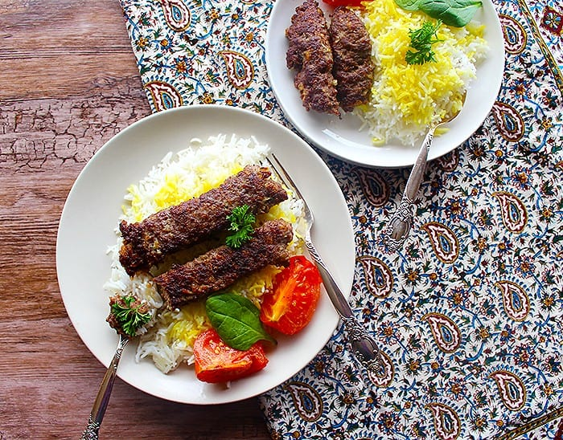

Kabab_tabei

Description
Kabab tabei is one the simplest and delicious Iranian foods. You can make just under an hour with just a handful of ingredients
as an alternative to grilled kebab.
Ingredients
*This amount of ingredients is enough for four to five people.
- 500 gr ground meat mixture of 250 gr ground lamp and 250 gr ground beef
- 1 onion
- 3 tomatoes
- turmeric, black pepper and salt to taste
- 1 tbsp frying oil, 40 gr butter
Steps
-
Grin the onion and squeeze it a little bit to get the moisture out of it.
-
Add the ground meat, onion and spices to a suitable pan, remember we want to add tomatoes later to this pan so choose a pan with enough room.
-
Knead the mixture very well then flatten it on the pan the thickness should be around 1 to 1.5 cm.
Use a suitable spurtle to separate the flattened mixture to square pieces, kebab shape, with 2.5 to 3 cm in width.
-
Add the oil and butter to the pan cover it with lid and let it cook until one side is brown.
-
Flip the kebabs, cut the tomatoes in half and add them to the pan cover it with the lid let it cook for about 10 minutes on medium heat.
-
Uncover the pan let the the most of moisture evaporate but keep a little bit of that delicious moisture when the other side of the kabas are brown and the tomatoes are cooked your meal is ready, enjoy!